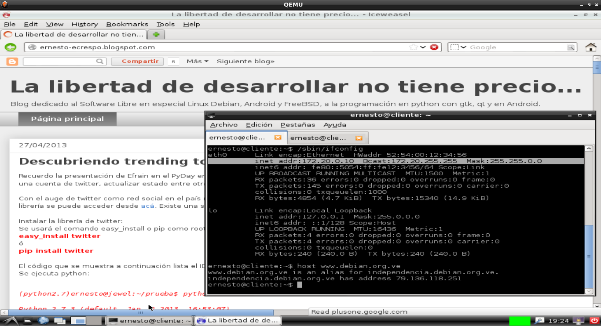

Hace años usaba qemu para probar los paquetes que empaquetaba para Debian, luego me pase a virtualbox.
Últimamente me ha parecido que consume más recursos virtualbox, así que por recomendación retomé qemu con kvm.
Los paquetes necesario son:
kvmvirt-manager: Para manejar las máquians virtuales de forma gráficalibvirt-binqemu-kvm
Instalación:
apt-get install kvm virt-manager libvirt-bin qemu-kvm
Prueba inicial: Se iniciará una máquina virtual que arranca un live-cd, por ejemplo el live-cd de Linuxmint 15 con 720M de RAM:
kvm -m 720 -cdrom linuxmint-15-cinnamon-dvd-32bit.iso
En la siguiente figura se muestra la captura de pantalla de la máquina virtual:

Crear un disco duro para la máquina virtual: Se crea el disco duro virtual en un archivo, en este caso se creará un disco duro virtual de 10 GB para instalar Debian en dicho disco duro virtual:
qemu-img create debian.img 10G
Formatting 'debian.img', fmt=raw size=10737418240
Ahora se tiene:
ernesto@debian:~/imagenes$ ls -l
total 1808024
-rw-r--r-- 1 ernesto ernesto 10737418240 jun 2 16:22 debian.img
-rw-r--r-- 1 root root 10737418240 jun 2 16:00 debianserver.img
-rw-r--r-- 1 ernesto ernesto 10737418240 jun 2 15:30 linuxmint.img
Instalación de Debian en la máquina virtual:
Ahora se instalará en el disco duro virtual llamado debian.img la distribución Debian para i386 con 720MB de RAM, se le define el disco duro a usar y el iso a utilizar:
qemu -m 720 -hda debian.img -cdrom ../Isos/debian-7.0.0-i386-lxde-CD-1.iso
En la siguiente captura de pantalla se muestra el inicio del cd de Debian:

Luego de terminar el proceso de instalación se inicia la máquina virtual de la siguiente forma:
qemu -m 720 -hda debian.img
La siguiente figura muestra el escritorio de LXDE de Debian con la consola abierta mostrando la IP que tiene la máquina virtual:

Como se puede ver la IP que tiene la máquina virtual es una IP privada, la única forma de acceder a la máquina virtual es directamente desde qemu, no se podrá abrir una sesión remota por que desde el equipo que aloja la máquina virtual no se tiene una ruta de como llegar a la IP de la máquina virtual.
Para ello necesitaremos darle unas opciones de redes a qemu, estas son nic y tap, la última crea una interfaz tap en el equipo que aloja la máquina virtual con la ruta de una red.
qemu -m 720 -hda debian.img -net nic -net tap
Adicional a esto es necesario instalar dnsmasq y configurar una regla de iptables en la configuración de kvm para poder navegar desde la máquina virtual.
Instalar dnsmasq:
apt-get install dnsmasq
Agregar la siguiente configuración en el archivo /etc/dnsmasq.conf:
#Archivo de resolv.conf con la configuración de dns de la red local.
resolv-file=/etc/resolv-orig.conf
#Interface a la cual acepta peticiones, en este caso tap0 para la máquina virtual (dns y dhcp) y wlan0 (sólo dns).
interface=tap0,wlan0
#No se activa el dhcp a la interfaz wlan0
no-dhcp-interface=wlan0
#Se define el rango de red de dhcp y el tiempo de liberación de las IPs.
dhcp-range=172.20.0.10,172.20.0.15,12h
Se agrega la siguiente regla de iptables al archivo /etc/kvm/kvm-ifup:
vim /etc/kvm/kvm-ifup
exec iptables -t nat -A POSTROUTING -s 172.20.0.0/16 -o wlan0 -j MASQUERADE
Está regla aplica nat a la red 172.20.0.0/255.255.0.0.
Ya con esta configuración ya se puede navegar y acceder remotamente a la máquina virtual.
Para terminar las configuraciones se agrega una regla de iptables que borre las tablas de nat en el archivo /etc/kvm/kvm-ifdown:
vim /etc/kvm/kvm-ifdown
exec iptables -t nat -F
La tabla de enrutamiento del equipo donde se levanta la máquina virtual es la siguiente:
root@debian:~# route -n
Kernel IP routing table
Destination Gateway Genmask Flags Metric Ref Use Iface
0.0.0.0 185.29.52.131 0.0.0.0 UG 0 0 0 wlan0
172.20.0.0 0.0.0.0 255.255.0.0 U 0 0 0 tap0
185.29.52.128 0.0.0.0 255.255.255.128 U 0 0 0 wlan0
En la siguiente captura de pantalla se muestra la página de este blog desde la máquina virtual y la consola donde se muestra la IP que está usando la máquina virtual, con esa IP se puede acceder desde el equipo que aloja la máquina virtual.

¡Haz tu donativo! Si te gustó el artículo puedes realizar un donativo con Bitcoin (BTC) usando la billetera digital de tu preferencia a la siguiente dirección: 17MtNybhdkA9GV3UNS6BTwPcuhjXoPrSzV
O Escaneando el código QR desde la billetera:

Comments !